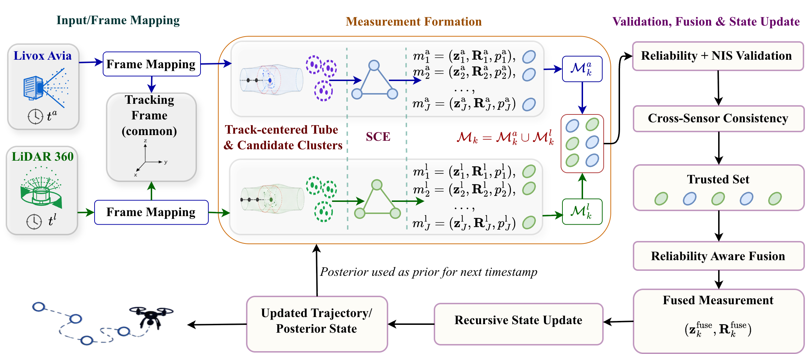

Md Hasibur Rahman
Postdoctoral Fellow
Department of Electrical and Computer Engineering
Clemson University
Email: mdhasir@clemson.edu
Google Scholar / GitHub / LinkedIn / CV
About
I am a Postdoctoral Fellow in the Department of Electrical and Computer Engineering at Clemson University, where I work with Prof. Adam Hoover. I received my Ph.D. in Computer Science from Missouri University of Science and Technology in 2026 under the supervision of Prof. Sanjay Madria. My dissertation focused on UAV detection and tracking in challenging aerial environments.
My research focuses on computer vision, tracking, spatiotemporal learning, and multimodal sensing. During my Ph.D., I worked on tiny airborne object detection, UAV swarm tracking, and multi-LiDAR 3D localization. At Clemson, I am applying this background to biomedical AI, wearable sensing, and egocentric vision.
Current Work at Clemson
Biomedical AI and osteoarthritis. I am working with the hand-OA research team on transfer learning using OAI data and newly collected data.
Egocentric vision for off-road environments. I am working on persistent traversable-route estimation from egocentric video, with a focus on maintaining a continuous route when the path is weak, occluded, or temporarily missing.
Wearable sensing. I am also exploring multimodal time-series learning for human activity and event detection in biomedical applications.
Recent
Sep 2026
Joined Clemson University as a Postdoctoral Fellow in Electrical and Computer Engineering.
Aug 2026
Successfully defended my Ph.D. dissertation and completed the Ph.D. in Computer Science at Missouri S&T.
Aug 2026
KRAfT appeared in the ICPR 2026 proceedings, and TARF was listed among the accepted research papers at ACM SIGSPATIAL 2026.
Apr 2026
Passed the Ph.D. comprehensive examination at Missouri S&T.
Mar 2026
KRAfT was accepted for the 28th International Conference on Pattern Recognition (ICPR 2026).
Mar 2026
Our radiogenomic MRI classification poster was recognized among the top three posters at the NextGen Pathways 2026 Symposium.
Mar 2026
STARD-Net was published in ACM Transactions on Spatial Algorithms and Systems.
Selected Research

KRAfT
UAV swarm tracking using Kalman residual modeling, formation-aware association, and recovery when detections are missing or ambiguous.

TARF
Track-aware reliability fusion for 3D drone localization and trajectory estimation from sparse heterogeneous LiDAR observations.
Research Interests
Computer Vision: small-object detection, multi-object tracking, temporal association, motion modeling, and state estimation.
Multimodal Sensing: sensor fusion, LiDAR-based 3D localization, sparse sensing, and temporal reasoning.
Biomedical AI: wearable sensing, multimodal time series, human activity and event detection, and transfer learning for biomedical data.
Publications
Google ScholarSTARD-Net: SpatioTemporal Attention for Robust Detection of Tiny Airborne Objects from Moving Drones
Md Hasibur Rahman, Sanjay Madria
ACM Transactions on Spatial Algorithms and Systems, 12(1), 1–48, 2026.
KRAfT: Kalman Residual Diffusion with Formation Awareness for UAV Swarm Tracking
Md Hasibur Rahman, Sanjay Madria
28th International Conference on Pattern Recognition (ICPR), 15–30, 2026.
TARF: Track-Aware Reliability Fusion for 3D Drone Localization and Trajectory Estimation with Sparse Multi-LiDAR Point Clouds
Md Hasibur Rahman, Sanjay Madria
ACM SIGSPATIAL International Conference on Advances in Geographic Information Systems, 2026. Accepted as a full paper.
V-USDT: Vision-Based UAV Swarm Detection and Tracking by Leveraging Swarm Formation Constraints
Md Hasibur Rahman, Sanjay Madria
26th IEEE International Conference on Mobile Data Management (MDM), 55–61, 2025.
An Augmented Dataset for Vision-based Unmanned Aerial Vehicles Detection and Tracking
Md Hasibur Rahman, Sanjay Madria
IEEE Applied Imagery Pattern Recognition Workshop (AIPR), 1–8, 2023.
Predict Student's Academic Performance and Evaluate the Impact of Different Attributes on the Performance Using Data Mining Techniques
Md Hasibur Rahman, M. R. Islam
2nd International Conference on Electrical & Electronic Engineering (ICEEE), 1–4, 2017.
Datasets
MVAAOD. An augmented dataset for vision-based UAV detection and tracking, introduced in our IEEE AIPR 2023 paper. Dataset
UAVSwarm-W2C. A multi-UAV dataset developed for UAV swarm tracking and evaluation of temporal association, identity preservation, and formation-aware tracking. Dataset / KRAfT repository
Teaching
Before my Ph.D., I was a Lecturer in Computer Science and Engineering at Bangladesh University of Business and Technology (2018–2022), where I was instructor of record for Data Structures, Operating Systems, Data Mining, Internet of Things, and Computer Architecture. I also supervised undergraduate thesis and capstone projects and helped establish the department's IoT laboratory.
At Missouri S&T, I served as a Graduate Teaching Assistant (2023–2026), supporting Big Data and MATLAB courses through laboratory instruction, grading, office hours, debugging, and student mentoring.
Selected Honors & Research Support
- Top 3 Best Poster, Pathways 2026 Symposium, NextGen Precision Health, 2026.
- NAIRR Pilot Resource Allocation for A100/H100-class GPU resources.
- First Runner-Up, IEEE Robo-droid Championship, 2015.